Eco-Art Creative Metal Recycling
Found-metal sculpture by Tim Pace, Finger, Tennessee
I weld together recycled metals: farm implements, tools, car parts, cutlery, industrial scrap, swing sets, trampoline frames and springs, just to mention a few.
Every piece is hand-crafted one at a time, so no two are alike. Each one is signed and numbered.
Call Tim, (731) 989-2366 Or email info@ecoartbytim.com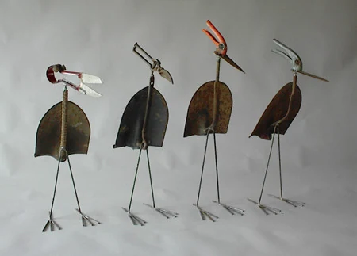
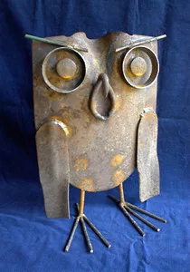
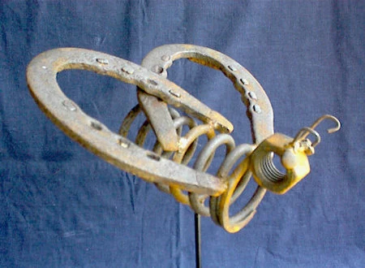
Hung on the board
Many times the materials themselves dictate what the outcome will be. One goal is not to distort the recycled object, so it can still be recognized.
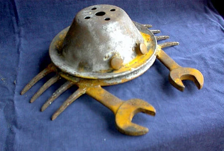
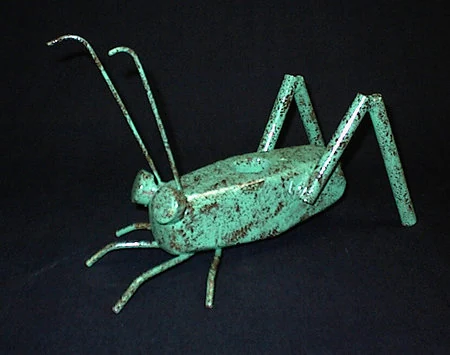
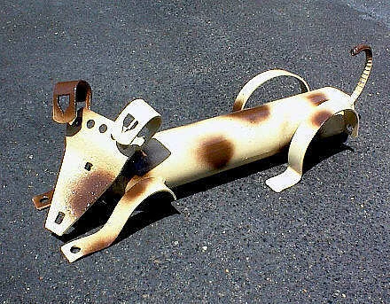
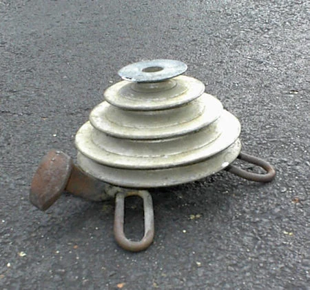
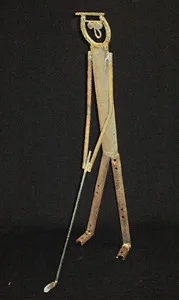
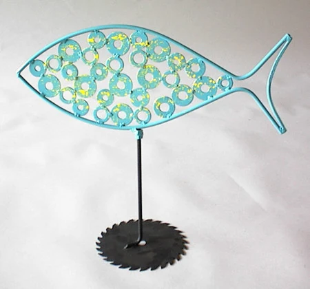
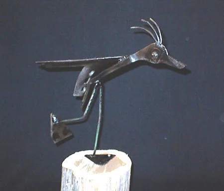
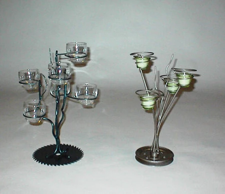
The pieces shown are representative. Each one is a unique creation and will differ from these samples and from every other piece of Eco-Art.
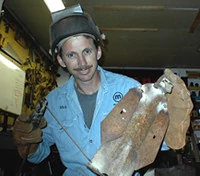
It started with a golfer
Eco-Art began in 1995 with the gift of a welder, an excess of scrap metal and the request for a unique gift. The result was a three-foot-tall sculpture of a golfer, to go in a garden. Simple pieces such as dogs and frogs followed.
I have no formal art training. I was an electrician by trade before I decided to pursue my art full time in 1998.
Today my pieces range from works that fit on a tabletop to eight-foot-tall sculptures: people, animals, flowers, insects and abstracts, to name just a few. Basically, if it can be welded, I can use it.
I am a member of:
- Tennessee Association of Craft Artists
- Craftsmen's Guild of Mississippi
- Tennessee Valley Art Association
My work was featured on episode 2112 of Nashville Public Television's Tennessee Crossroads.
From the garden to the mantel
Eco-Art was first designed as garden art. Many pieces never made it into the garden: they found homes on mantels, bookcases, hearths and coffee tables.
Some pieces are functional, too: business card holders, candle holders and wine racks.
Commissions
If you don't find what you want here, I accept commissions. Requests can only be filled based on the materials I have on hand, so tell me what you have in mind.
Ask Tim about a commissionWhere to find Eco-Art
Eco-Art is at regional art and craft shows, and in these places all year.
For sale
- My gallery and studioFinger, Tennessee
- Gift shop of the National Ornamental Metal MuseumMemphis, Tennessee
- Mississippi Crafts CenterRidgeland, Mississippi
- Corinth Artist Guild GalleryCorinth, Mississippi
On permanent display
- Jackson-Madison County LibraryJackson, Tennessee
- The Children's Museum of the ShoalsFlorence, Alabama
- “My Big Backyard,” the Children's Learning CenterMemphis Botanic Garden, Memphis, Tennessee
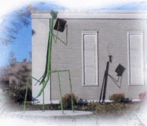
Questions, a piece you've seen, or just hello
Reach me by phone, email or mail.
- Phone
- (731) 989-2366
- info@ecoartbytim.com
- Eco-Art Creative Metal Recycling
82 Sherry Lynn Drive
Finger, TN 38334